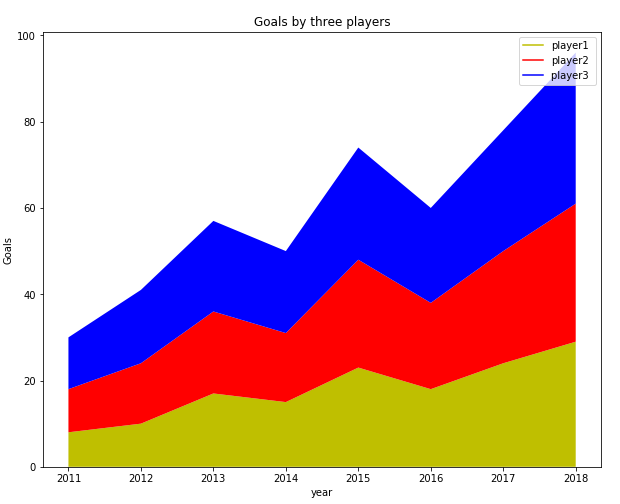

sudo apt-get install python3-matplotlib
https://pythobyte.com/python-data-visualization-with-matplotlib-4367ad6d/
Вступление
Визуализация тенденций данных-одна из важнейших задач в науке о данных и машинном обучении. Выбор алгоритмов интеллектуального анализа данных и машинного обучения в значительной степени зависит от паттернов, выявленных в наборе данных на этапе визуализации данных. В этой статье мы увидим, как мы можем выполнять различные типы визуализации данных в Python. Мы будем использовать библиотеку Python Matplotlib , которая является стандартом де-факто для визуализации данных в Python.
В статье Краткое введение в Matplotlib для визуализации данных дается очень высокоуровневое введение в библиотеку Matplot и объясняется, как рисовать точечные диаграммы, гистограммы и т. Д. В этой статье мы рассмотрим больше функций Matplotlib.
Изменение Размера Участка По Умолчанию
Первое, что мы сделаем, – это изменим размер участка по умолчанию. По умолчанию размер участков Matplotlib составляет 6 x 4 дюйма. Размер участков по умолчанию можно проверить с помощью этой команды:
import matplotlib.pyplot as plt
print(plt.rcParams.get('figure.figsize'))
Для лучшего просмотра может потребоваться изменить размер графика Matplotlib по умолчанию. Для этого вы можете использовать следующий скрипт:
fig_size = plt.rcParams["figure.figsize"]
fig_size[0] = 10
fig_size[1] = 8
plt.rcParams["figure.figsize"] = fig_size
Приведенный выше сценарий изменяет размер графиков Matplotlib по умолчанию на 10 x 8 дюймов.
Давайте начнем наше обсуждение с простого линейного графика.
Линейный график
Линейный сюжет-это самый простой сюжет в Matplotlib. Он может быть использован для построения любой функции. Давайте построим линейный график для функции куба. Взгляните на следующий сценарий:
import matplotlib.pyplot as plt
import numpy as np
x = np.linspace(-10, 9, 20)
y = x ** 3
plt.plot(x, y, 'b')
plt.xlabel('X axis')
plt.ylabel('Y axis')
plt.title('Cube Function')
plt.show()
В приведенном выше скрипте мы сначала импортируем класс pyplot из библиотеки Matplotlib. В нашем скрипте есть два массива numpy x и y . Мы использовали метод linspace библиотеки numpy для создания списка из 20 чисел от -10 до положительного 9. Затем мы берем кубический корень из всех чисел и присваиваем результат переменной y . Чтобы построить два массива numpy , вы можете просто передать их в метод plot класса pyplot библиотеки Matplotlib. Вы можете использовать атрибуты xlabel , ylabel и title класса pyplot для обозначения оси x, оси y и заголовка графика. Вывод скрипта выше выглядит примерно так:
Выход:
Создание Нескольких Участков
На самом деле вы можете создать несколько сюжетов на одном холсте с помощью Matplotlib. Для этого вы должны использовать функцию subplot , которая определяет местоположение и номер участка. Взгляните на следующий пример:
import matplotlib.pyplot as plt
import numpy as np
x = np.linspace(-10, 9, 20)
y = x ** 3
plt.subplot(2,2,1)
plt.plot(x, y, 'b*-')
plt.subplot(2,2,2)
plt.plot(x, y, 'y--')
plt.subplot(2,2,3)
plt.plot(x, y, 'b*-')
plt.subplot(2,2,4)
plt.plot(x, y, 'y--')
Первый атрибут функции subplot – это строки, которые будут иметь подзаголовки, а второй параметр-количество столбцов для подзаголовка. Значение 2,2 вида, что будет четыре графика. Третий аргумент-это позиция, в которой будет отображаться график. Позиции начинаются сверху слева. График с позицией 1 будет отображаться в первой строке и первом столбце. Аналогично, график с позицией 2 будет отображаться в первой строке и втором столбце.
Взгляните на третий аргумент функции plot . Этот аргумент определяет форму и цвет маркера на графике.
Выход:
Построение графиков объектно-ориентированным способом
В предыдущем разделе мы использовали метод plot класса pyplot и передали ему значения координат x и y вместе с метками. Однако в Python тот же сюжет может быть нарисован объектно-ориентированным способом. Взгляните на следующий сценарий:
import matplotlib.pyplot as plt
import numpy as np
x = np.linspace(-10, 9, 20)
y = x ** 3
figure = plt.figure()
axes = figure.add_axes([0.2, 0.2, 0.8, 0.8])
Метод figure , вызываемый с помощью класса pyplot , возвращает объект figure . С помощью этого объекта можно вызвать метод add_axes . Параметры, передаваемые методу add_axes , – это расстояние от левой и нижней осей по умолчанию, а также ширина и высота оси соответственно. Значение этих параметров должно быть указано как доля от размера фигуры по умолчанию. Выполнение приведенного выше сценария создает пустую ось, как показано на следующем рисунке:
Вывод приведенного выше скрипта выглядит следующим образом:
У нас есть наша ось, теперь мы можем добавлять данные и метки к этой оси. Чтобы добавить данные, нам нужно вызвать функцию plot и передать ей наши данные. Аналогично, для создания меток для оси x, оси y и для заголовка мы можем использовать функции set_xlabel , set_ylabel и set_title , как показано ниже:
import matplotlib.pyplot as plt
import numpy as np
x = np.linspace(-10, 9, 20)
y = x ** 3
figure = plt.figure()
axes = figure.add_axes([0.2, 0.2, 0.8, 0.8])
axes.plot(x, y, 'b')
axes.set_xlabel('X Axis')
axes.set_ylabel('Y Axis')
axes.set_title('Cube function')
Вы можете видеть, что результат похож на тот, который мы получили в предыдущем разделе, но на этот раз мы использовали объектно-ориентированный подход.
Вы можете добавить столько осей, сколько захотите, на один участок, используя метод add_axes . Взгляните на следующий пример:
import matplotlib.pyplot as plt
import numpy as np
x = np.linspace(-10, 9, 20)
y = x ** 3
z = x ** 2
figure = plt.figure()
axes = figure.add_axes([0.0, 0.0, 0.9, 0.9])
axes2 = figure.add_axes([0.07, 0.55, 0.35, 0.3]) # inset axes
axes.plot(x, y, 'b')
axes.set_xlabel('X Axis')
axes.set_ylabel('Y Axis')
axes.set_title('Cube function')
axes2.plot(x, z, 'r')
axes2.set_xlabel('X Axis')
axes2.set_ylabel('Y Axis')
axes2.set_title('Square function')
Внимательно посмотрите на сценарий выше. В приведенном выше сценарии у нас есть две оси. Первая ось содержит графики кубического корня входных данных, в то время как вторая ось рисует график квадратного корня тех же данных внутри другого графика для оси куба.
В этом примере вы лучше поймете роль параметров left, bottom, width и height. На первой оси значения для left и bottom равны нулю, а значения для width и height равны 0.9, что означает, что наша внешняя ось будет иметь 90% ширины и высоты оси по умолчанию.
Для второй оси значение слева равно 0,07, для нижней-0,55, а ширина и высота-0,35 и 0,3 соответственно. Если вы выполните описанный выше сценарий, то увидите большой график для функции куба и маленький график для квадратной функции, лежащей внутри графика для куба. Вывод выглядит следующим образом:
Подзаголовки
Еще один способ создать несколько сюжетов одновременно-использовать метод subplot . Вам нужно передать значения параметров nrows и ncols . Общее количество сгенерированных участков будет равно nrow x ncol . Давайте рассмотрим простой пример. Выполните следующий сценарий:
import matplotlib.pyplot as plt
import numpy as np
x = np.linspace(-10, 9, 20)
y = x ** 3
z = x ** 2
fig, axes = plt.subplots(nrows=2, ncols=3)
На выходе вы увидите 6 графиков в 2 строки и 3 столбца, как показано ниже:
Далее мы будем использовать цикл для добавления выходных данных квадратной функции к каждому из этих графиков. Взгляните на следующий сценарий:
import matplotlib.pyplot as plt
import numpy as np
x = np.linspace(-10, 9, 20)
z = x ** 2
figure, axes = plt.subplots(nrows=2, ncols=3)
for rows in axes:
for ax1 in rows:
ax1.plot(x, z, 'b')
ax1.set_xlabel('X - axis')
ax1.set_ylabel('Y - axis')
ax1.set_title('Square Function')
В приведенном выше сценарии мы перебираем оси, возвращаемые функцией subplots , и выводим выходные данные квадратной функции на каждой оси. Помните, поскольку у нас есть оси в 2 строках и трех столбцах, мы должны выполнить вложенный цикл, чтобы перебрать все оси. Внешний цикл for перебирает оси в строках, в то время как внутренний цикл for перебирает оси в столбцах. Вывод скрипта выше выглядит примерно так:
В выходных данных вы можете увидеть все шесть графиков с квадратными функциями.
Изменение размера рисунка для участка
auto.ru
реклама
Помимо изменения размера графика по умолчанию, вы также можете изменить размер рисунка для конкретных графиков. Для этого вам нужно передать значение параметра figsize функции subplots . Значение параметра figsize должно быть передано в виде кортежа, где первое значение соответствует ширине, а второе-высоте графика. Посмотрите на следующий пример, чтобы увидеть, как изменить размер конкретного участка:
import matplotlib.pyplot as plt
import numpy as np
x = np.linspace(-10, 9, 20)
y = x ** 3
z = x ** 2
figure, axes = plt.subplots(figsize = (6,8))
axes.plot(x, z, 'r')
axes.set_xlabel('X-Axis')
axes.set_ylabel('Y-Axis')
axes.set_title('Square Function')
В приведенном выше сценарии нарисуйте график для квадратной функции шириной 6 дюймов и высотой 8 дюймов. Выход выглядит примерно так:
Добавление легенд
Добавление легенд к сюжету очень просто с помощью библиотеки Matplotlib. Все, что вам нужно сделать, это передать значение параметра label функции plot . Затем после вызова функции plot вам просто нужно вызвать функцию legend . Взгляните на следующий пример:
import matplotlib.pyplot as plt
import numpy as np
x = np.linspace(-10, 9, 20)
y = x ** 3
z = x ** 2
figure = plt.figure()
axes = figure.add_axes([0,0,1,1])
axes.plot(x, z, label="Square Function")
axes.plot(x, y, label="Cube Function")
axes.legend()
В приведенном выше скрипте мы определяем две функции: квадрат и куб, используя переменные x, y и z. Затем мы сначала строим квадратную функцию и для параметра label передаем значение Квадратной функции . Это будет значение, отображаемое в метке для квадратной функции. Затем мы строим кубическую функцию и передаем Cube Function в качестве значения для параметра label . Выход выглядит примерно так:
В выходных данных вы можете увидеть легенду в левом верхнем углу.
Положение легенды можно изменить, передав значение для параметра loc функции legend|/. Возможные значения могут быть 1 (для верхнего правого угла), 2 (для верхнего левого угла), 3 (для нижнего левого угла) и 4 (для нижнего правого угла). Давайте нарисуем легенду в правом нижнем углу сюжета. Выполните следующий сценарий:
import matplotlib.pyplot as plt
import numpy as np
x = np.linspace(-10, 9, 20)
y = x ** 3
z = x ** 2
figure = plt.figure()
axes = figure.add_axes([0,0,1,1])
axes.plot(x, z, label="Square Function")
axes.plot(x, y, label="Cube Function")
axes.legend(loc=4)
Выход:
Варианты цвета
Существует несколько вариантов изменения цвета и стилей участков. Самый простой способ-передать первую букву цвета в качестве третьего аргумента, как показано в следующем сценарии:
import matplotlib.pyplot as plt
import numpy as np
x = np.linspace(-10, 9, 20)
y = x ** 3
z = x ** 2
figure = plt.figure()
axes = figure.add_axes([0,0,1,1])
axes.plot(x, z, "r" ,label="Square Function")
axes.plot(x, y, "g", label="Cube Function")
axes.legend(loc=4)
В приведенном выше сценарии строка “r” была передана в качестве третьего параметра для первого графика. Для второго графика строка “g” была передана в третьем параметре. В выходных данных первый график будет напечатан красной сплошной линией, а второй-зеленой сплошной линией, как показано ниже:
Другой способ изменить цвет графика-использовать параметр color . Вы можете передать имя цвета или шестнадцатеричное значение цвета в параметр color . Взгляните на следующий пример:
import matplotlib.pyplot as plt
import numpy as np
x = np.linspace(-10, 9, 20)
y = x ** 3
z = x ** 2
figure = plt.figure()
axes = figure.add_axes([0,0,1,1])
axes.plot(x, z, color = "purple" ,label="Square Function")
axes.plot(x, y, color = "#FF0000", label="Cube Function")
axes.legend(loc=4)
Выход:
Участок Стека
Stack plot-это расширение гистограммы или линейной диаграммы, которая разбивает данные из разных категорий и складывает их вместе, чтобы можно было легко провести сравнение между значениями из разных категорий.
Предположим, вы хотите сравнить голы, забитые тремя разными футболистами в год в течение последних 8 лет, вы можете создать график стека с помощью Matplot, используя следующий сценарий:
import matplotlib.pyplot as plt
year = [2011, 2012, 2013, 2014, 2015, 2016, 2017, 2018]
player1 = [8,10,17,15,23,18,24,29]
player2 = [10,14,19,16,25,20,26,32]
player3 = [12,17,21,19,26,22,28,35]
plt.plot([],[], color='y', label = 'player1')
plt.plot([],[], color='r', label = 'player2')
plt.plot([],[], color='b', label = 'player3 ')
plt.stackplot(year, player1, player2, player3, colors = ['y','r','b'])
plt.legend()
plt.title('Goals by three players')
plt.xlabel('year')
plt.ylabel('Goals')
plt.show()
Выход:
Чтобы создать график стека с помощью Python, вы можете просто использовать класс stackplot библиотеки Matplotlib. Значения, которые вы хотите отобразить, передаются в класс в качестве первого параметра, а значения, которые должны быть сложены на горизонтальной оси, отображаются в качестве второго параметра, третьего параметра и так далее. Вы также можете установить цвет для каждой категории с помощью атрибута colors .
круговая диаграмма
Круговой тип-это круговая диаграмма, на которой различные категории помечены как часть круга. Чем больше доля категории, тем больше будет доля, которую она займет на графике.
Давайте нарисуем простую круговую диаграмму голов, забитых футбольной командой из штрафных ударов, пенальти и полевых голов. Взгляните на следующий сценарий:
import matplotlib.pyplot as plt
goal_types = 'Penalties', 'Field Goals', 'Free Kicks'
goals = [12,38,7]
colors = ['y','r','b']
plt.pie(goals, labels = goal_types, colors=colors ,shadow = True, explode = (0.05, 0.05, 0.05), autopct = '%1.1f%%')
plt.axis('equal')
plt.show()
Выход:
Для создания круговой диаграммы в Matplotlib используется класс pie . Первым параметром конструктора класса является список чисел для каждой категории. Разделенный запятыми список категорий передается в качестве аргумента атрибуту labels . Список цветов для каждой категории передается в атрибут colors . Если установлено значение true, атрибут shadow создает тени вокруг различных категорий на круговой диаграмме. Наконец, атрибут explode разбивает круговую диаграмму на отдельные части.
Здесь важно отметить, что вам не нужно передавать процент для каждой категории; скорее вам просто нужно передать значения, и процент для круговых диаграмм будет вычислен автоматически.
Сохранение графика
Сохранение графика очень просто в Matplotlib. Все, что вам нужно сделать, это вызвать метод savefig из объекта figure и передать ему путь к файлу, с которым вы хотите сохранить свой график. Взгляните на следующий пример:
import matplotlib.pyplot as plt
import numpy as np
x = np.linspace(-10, 9, 20)
y = x ** 3
z = x ** 2
figure, axes = plt.subplots(figsize = (6,8))
axes.plot(x, z, 'r')
axes.set_xlabel('X-Axis')
axes.set_ylabel('Y-Axis')
axes.set_title('Square Function')
figure.savefig(r'E:/fig1.jpg')
Приведенный выше скрипт сохранит ваш файл с именем fig1.jpg в корне каталога E .
Если вы заинтересованы в визуализации данных и не знаете, с чего начать, обязательно ознакомьтесь с нашей книгой .
Визуализация данных в Python , книга для начинающих и промежуточных разработчиков Python, проведет вас через простые манипуляции с данными с Пандами, охватит основные библиотеки построения графиков, такие как Matplotlib и Seaborn, и покажет вам, как использовать преимущества декларативных и экспериментальных библиотек, таких как Altair.
Вывод
Matplotlib-одна из наиболее часто используемых библиотек Python для визуализации данных и построения графиков. В статье на различных примерах объясняются некоторые из наиболее часто используемых функций Matplotlib. Хотя статья охватывает большую часть основных вещей, это только верхушка айсберга. Я бы посоветовал вам изучить официальную документацию для библиотеки Matplotlib и посмотреть, что еще вы можете сделать с этой удивительной библиотекой.